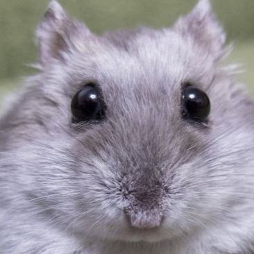

Хомяк в курсе

🐹 Всё самое важное

Джунгарский хомяк, блогер и главный эксперт по опилкам. Помоги мне пройти лабиринт к семечке!
Поддержите блог хомяка вкусняшкой! Каждая семечка идёт на новые игрушки и обзоры.
🚀 На телефоне: веди пальцем по экрану | На ПК: стрелки клавиатуры или перетаскивание мышкой